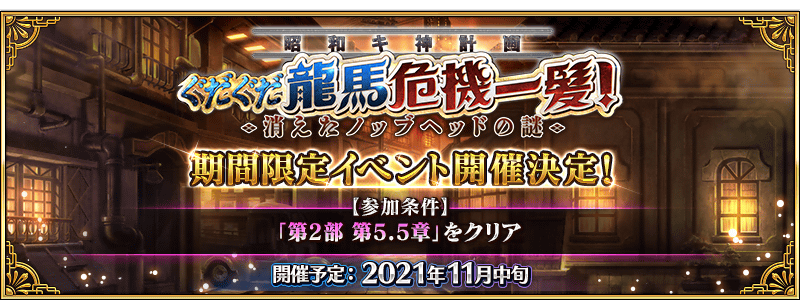

今年也要GUDAGUDA！
決定舉辦期間限定活動「昭和夔神計畫 GUDAGUDA龍馬千鈞一髪！ 消失的信信Head之謎」！
詳情請期待續報。
◆活動舉辦預定◆
2021年11月中旬
◆活動參加條件◆
滿足以下條件的御主才能參加
・通過第2部 第5.5章「地獄界曼荼羅 平安京 轟雷一閃」
※不需要通過亞種特異點(從Ⅰ到Ⅳ)。
※本頁面皆為開發中圖片。會有與實際圖片相異的情況。
期間限定活動「昭和夔神計畫 GUDAGUDA龍馬千鈞一髪！ 消失的信信Head之謎」的期間中，下表的從者在活動關卡中，會得到活動加成！
強化對象從者，向活動挑戰吧！
※活動加成的效果量因從者而異。
【活動加成的對象從者】
| 職階 | 稀有度 | 從者名 |
|---|---|---|
| Saber | ★★★★★ | 沖田總司 |
| ★★★★★ | 沖田總司〔Alter〕 | |
| ★★★★ | 齋藤一 | |
| Archer | ★★★★ | 織田信長 |
| ★ | 織田信勝 | |
| Lancer | ★★★★ | 長尾景虎 |
| Rider | ★★★★ | 坂本龍馬 |
| ★★★ | 美杜莎 | |
| Assassin | ★★★★★ | 李書文 |
| ★★★★ | 沖田・J・總司 | |
| ★★★ | 岡田以藏 | |
| Berserker | ★★★★★ | 土方歲三 |
| ★★★★ | 織田信長 | |
| ★★★★ | 茶茶 | |
| ★★★ | 森長可 | |
| Ruler | ★★★★★ | 卑彌呼 |
| Avenger | ★★★★★ | 魔王信長(織田信長) |
| Alterego | ★★★★★ | 沖田總司〔Alter〕 |
| Shielder | ★★★ | 瑪琇・基利艾拉特 |
※就算成為對象從者也會有未在本活動的主線劇本登場的情況。 ※「★5(SSR)魔王信長(織田信長)」是「★5(SSR)織田信長」靈基再臨第3階段後名稱會變成「★5(SSR)魔王信長」。 ※自11月12日(五) 17:00，在從者選擇畫面和從者強化畫面等，追加活動加成篩選器。由於是只顯示於活動活躍從者的便利功能，敬請活用。
其他還有，
・主線關卡通過聲援宣傳活動 第2彈
・復刻:超古代新選組列傳 GUDAGUDA邪馬台國2020 輕量版
・復刻 GUDAGUDA邪馬台國2020Pick Up召喚(每日交替)
以期間限定舉辦中！
關於詳情，請自下述橫幅確認。
■「主線關卡通過聲援宣傳活動 第2彈」詳細情報

■「復刻:超古代新選組列傳 GUDAGUDA邪馬台國2020 輕量版」詳細情報

■「復刻 GUDAGUDA邪馬台國2020Pick Up召喚(每日交替)」詳細情報